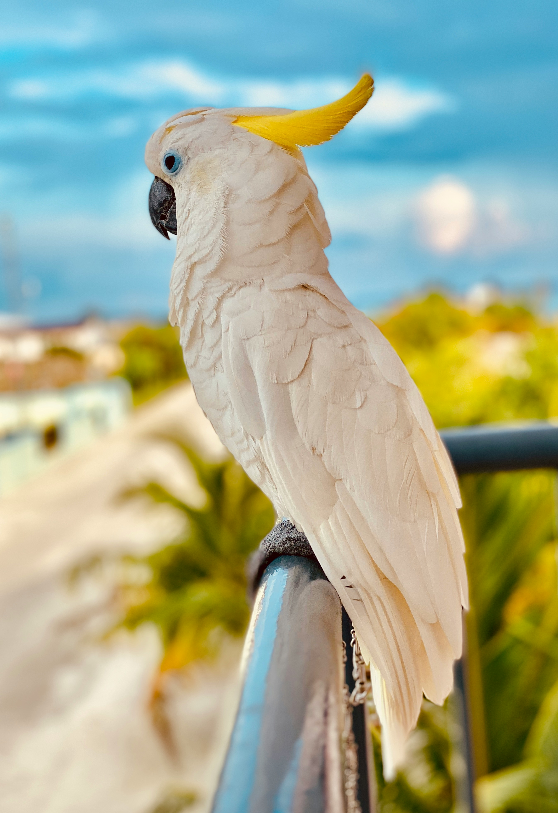

PARROT
Result
オウム・大型インコタイプ
おしゃべりの奥にある知性
表現豊かで、仲間とのやりとりが得意なタイプです。
でも、知ってほしいこと
賢い鳥ほど、退屈や孤独、飛べない環境が重い負担になります。
自然では
群れで飛び、声で交流し、複雑な採食や探索を行います。
カフェでは
飛翔制限、孤立、知的刺激不足、過剰な接触、感染症管理が課題です。

Result
表現豊かで、仲間とのやりとりが得意なタイプです。
賢い鳥ほど、退屈や孤独、飛べない環境が重い負担になります。
群れで飛び、声で交流し、複雑な採食や探索を行います。
飛翔制限、孤立、知的刺激不足、過剰な接触、感染症管理が課題です。
福祉
高い知能と社会性があり、飛ぶ、かじる、探索する行動が重要です。
取引
国際取引規制の対象となる種が多く含まれます。
保全
野生下では森林環境や群れとの関係が生活の中心です。
感染症
オウム病など人獣共通感染症のリスクがあります。換気、清掃、手洗いが重要です。